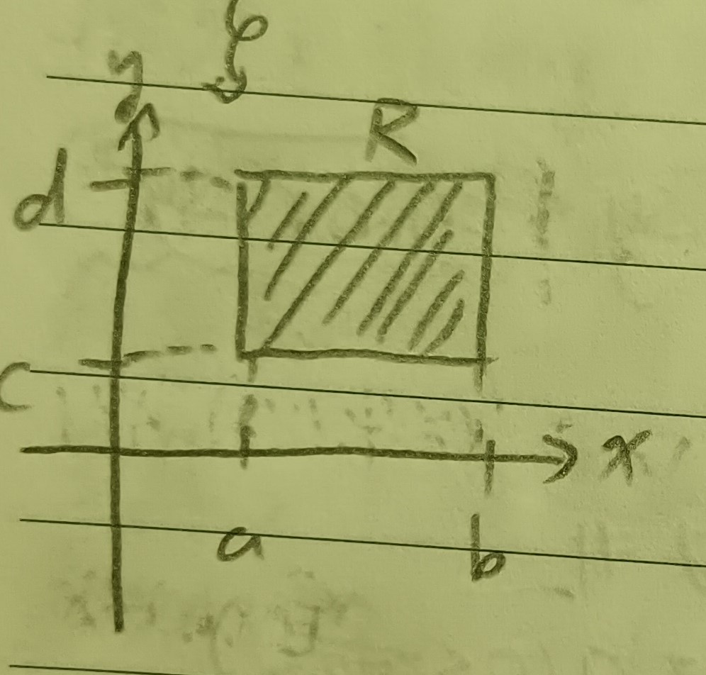

這份筆記是關於多變數函數積分的定義與性質。
多變數函數的積分
定義 1：多變數函數積分 (Integral of Multivariable Function)
通常我們說一個多變數函數的積分，說的都是該函數在一個如下圖1的閉矩形\(R=[a,b]\times[c,d]\)上的黎曼和。
大概可以想成 \[ \iint_R f(x,y)dxdy=\int_a^b\left(\int_c^d f(x,y)dy\right)dx=\int_c^d\left(\int_a^b f(x,y)dx\right)dy \] 我們接著就要來證明這件事。
定理 2
若\(f(x,y)\)連續，則\(f(x,y)\)在閉矩形\(R\)內一致連續。
證明：假設不是，則存在\(\epsilon>0\) s.t. \(\forall\delta>0\), \(\exists x,y\in R\) s.t. \(|x-y|<\delta\)但\(|f(x)-f(y)|>\epsilon\)。
令\(\delta=1/n\)，存在\(\{x_n\},\{y_n\}\subset R\)使得\(|x_n-y_n|<\frac{1}{n}\), \(|f(x_n)-f(y_n)|>\epsilon\)。由魏爾斯特拉斯定理(這裡的定理4)，存在收斂的子序列\(\{x_{n_k}\}\to a\), \(\{y_{n_k}\}\to b\)。又\(|x_{n_k}-y_{n_k}|\to 0\)，故\(a=b\)。但因為\(f\)連續，所以也有\(|f(x_{n_k})-f(y_{n_k})|\to
0\)。矛盾，故\(f\)在\(R\)上一致連續。QED
引理 3
若\(f(x,y)\)在\(R\)上連續，則 \[
F(x)=\int_c^d f(x,y)dy
\] 也連續。
證明：由於\(f\)一致連續，故 \[ \begin{aligned} F(x+h)-F(x)&=\int_c^d f(x+h,y)dy-\int_c^d f(x,y)dy\\ &=\int_c^d(f(x+h,y)-f(x,y))dy\\ &\leq\epsilon(d-c) \end{aligned} \] (只要\(h\)夠小就可以了)，故\(F\)連續。QED
定理 4
若\(f(x,y)\)連續且關於\(x\)的偏導數也連續，則\(F(x)=\int_c^d f(x,y)dy\)可微，且 \[ \frac{dF}{dx}=\int_c^d f_x(x,y)dy \]
證明： \[ F(x+h)-F(x)=\int_c^d(f(x+h,y)-f(x,y))dy \] 且由微分均值定理知存在\(\theta\)使得 \[ f(x+h,y)-f(x,y)=hf_x(x+\theta h,y) \] 故有 \[ \frac{F(x+h)-F(x)}{h}=\int_c^d f_x(x+\theta h,y)dy \] 而又\(f_x\)在\(R\)內一致連續，故\(f_x(x+\theta h-f_x(x,y))\)可以任意小。令\(h\to 0\)，則 \[ \frac{dF}{dx}=\int_c^d f_x(x,y)dy \] QED
註記 4-1
一般來說，若令 \[ F(x)=\int_{\psi_1(x)}^{\psi_2(x)}f(x,y)dx \] 則令\(v=\psi_1(x)\), \(u=\psi_2(x)\)，則令 \[ F(x)=\phi(u,v,x)=\int_v^u f(x,y)dy \] 由鏈鎖律，有 \[ \begin{aligned} \frac{dF}{dx}&=\phi_u\frac{du}{dx}+\phi_v\frac{dv}{dx}+\phi_x\frac{dx}{dx}\\ &=\phi_u\psi_2'(x)+\phi_v\psi_1'(x)+\int_v^u f_x(x,y)dx\\ &\mbox{(上面的定理4)}\\ &=f(x,\psi_2(x))\psi_2'(x)-f(x,\psi_1(x))\psi_1'(x)+\int_{\psi_1(x)}^{\psi_2(x)}f_x(x,y) \end{aligned} \] 最後一部是微積分基本定理，其中要注意第二項前面的負號，它是 \[ \int_v^u\cdots=-\int_u^v\cdots \]
定理 5
若\(f(x,y)\)在\(R\)中連續，則 \[ \int_a^b\left(\int_c^d f(x,y)dy\right)dx=\int_c^d\left(\int_a^b f(x,y)dx\right)dy \]
證明：令 \[ v(x,y)=\int_c^y f(x,\eta)d\eta, u(x,y)=\int_a^x v(\xi,y)d\xi \] 則 \[ \begin{aligned} u_y(x,y)&=\int_a^x v_y(\xi,y)d\xi\\ &\mbox{(上面的定理4)}\\ &=\int_a^x f(\xi,y)d\xi\\ &\mbox{(微積分基本定理)} \end{aligned} \] 又 \[ \begin{aligned} u(x,y)&=u(x,c)+\int_c^y u_y(x,\eta)d\eta\\ &\mbox{(微積分基本定理)}\\ &=\int_c^y u_y(x,\eta)d\eta\\ &(v(\xi,c)=0\Rightarrow u(x,c)=0)\\ &=\int_c^y\left(\int_a^x f(\xi,\eta)d\xi\right)d\eta \end{aligned} \] 令\(x=b,y=d\)，則 \[ \begin{aligned} u(b,d)&=\int_a^b\left(\int_c^d f(\xi,\eta)d\eta\right)d\xi\\ &=\int_c^d\left(\int_a^b f(\xi,\eta)d\xi\right)d\eta \end{aligned} \] QED